전기산업기사 (2019-03-03 기출문제)
1과목: 전기자기학
1. 그림과 같은 동축케이블에 유전체가 채워졌을 때의 정전 용량(F)은? (단, 유전체의 비유전율은 εs이고 내반지름과 외반지름은 각각 a(m), b(m)이며 케이블의 길이는 ℓ(m)이다.
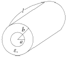
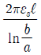
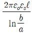
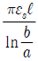
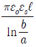
(정답률: 69%)

2. 두 벡터가 A=2ax+4ay-3az, B=ax-ay일 때 A×B는?
- 6ax-3ay+3az
- -3ax-3ay-6az
- 6ax+3ax-3az
- -3ax+3ay+6az
(정답률: 59%)
3. 두 유전체가 접했을 때
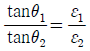
의 관계식에서 θ1=0°일 때의 표현으로 틀린 것은?- 전속밀도는 불변이다.
- 전기력선은 굴절하지 않는다.
- 전계는 불연속적으로 변한다.
- 전기력선은 유전율이 큰 쪽에 모여진다.
(정답률: 59%)
4. 공기 중 임의의 점에서 자계의 세기(H)가 20AT/m라면 자속밀도(B)는 약 몇 Wb/m2인가?
- 2.5×10-5
- 3.5×10-5
- 4.5×10-5
- 5.5×10-5
(정답률: 69%)
5. 전자석의 흡인력은 공극(air gap)의 자속밀도를 B라 할때 다음의 어느 것에 비례하는가?
- B
- B0.5
- B1.6
- B2.0
(정답률: 71%)
6. 그림과 같이 평행한 두 개의 무한 직선 도선에 전류가 각각 I, 2I인 전류가 흐른다. 두 도선 사이의 점 P에서 자계의 세기가 0이다. 이 때 a/b 는?
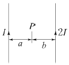
- 4
- 2
- 1/2
- 1/4
(정답률: 77%)
7. 감자율(Demagnetization factor)이 “0”인 자성체로 가장 알맞은 것은?
- 환상 솔레노이드
- 굵고 짧은 막대 자성체
- 가늘고 긴 막대 자성체
- 가늘고 짧은 막대 자성체
(정답률: 79%)
8. 질량이 m(kg)인 작은 물체가 전하 Q(C)를 가지고 중력방향과 직각인 무한도체평면 아래쪽 d(m)의 거리에 놓여있다. 정전력이 중력과 같게 되는데 Q(C)의 크기는?
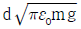
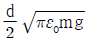
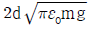
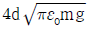
(정답률: 51%)
9. 극판의 면적 S=10cm2, 간격 d=1mm의 평행판 콘덴서에 비유전율 εs=3인 유전체를 채웠을 때 전압 100V를 인가하면 축적되는 에너지는 약 몇 J 인가?
- 0.3×10-7
- 0.6×10-7
- 1.3×10-7
- 2.1×10-7
(정답률: 63%)
10. 자기인덕턴스 0.5H의 코일에 1/200초 동안에 전류가 25A로부터 20A로 줄었다. 이 코일에 유기된 기전력의 크기 및 방향은?
- 50V, 전류와 같은 방향
- 50V, 전류와 반대 방향
- 500V, 전류와 같은 방향
- 500V, 전류와 반대 방향
(정답률: 61%)
11. 어느 점전하에 의하여 생기는 전위를 처음 전위의 1/2이 되게 하려면 전하로부터의 거리를 어떻게 해야 하는가?
- 1/2로 감소시킨다.
- 1/√2로 감소시킨다.
- 2배 증가시킨다.
- 1/√2배 증가시킨다.
(정답률: 74%)
12. 자계의 세기를 표시하는 단위가 아닌 것은?
- A/m
- Wb/m
- N/Wb
- AT/m
(정답률: 54%)
13. 그림과 같이 면적 S(m2), 간격 d(m)인 극판간에 유전율 ε, 저항률 ρ인 매질을 채웠을 때 극판간의 정전용량 C와 저항 R의 관계는? (단, 전극판의 저항률은 매우 작은 것으로 한다.)
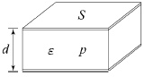
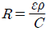
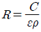
- R=ερC
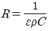
(정답률: 70%)
14. 점전하 Q(c)와 무한평면도체에 대한 영상전하는?
- Q(C)와 같다.
- -Q(C)와 같다.
- Q(C)보다 크다.
- Q(C)보다 작다.
(정답률: 81%)
15. 전계의 세기 E, 자계의 세기가 H일 때 포인팅 벡터(P)는?
- P=E× H
- P=1/2E× H
- P=H curl E
- P=E curl H
(정답률: 82%)
16. 철심환의 일부에 공극(air gap)을 만들어 철심부의 길이 ℓ(m), 단면적 A(m)2, 비투자율이 μ이고 공극부의 길이 δ(m)일 때 철심부에서 총권수 N회인 도선을 감아 전류 I(A)를 흘리면 자속이 누설되지 않는다고 하고 공극 내에 생기는 자계의 자속 ø0(Wb)는?
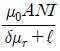
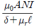
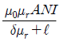
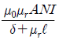
(정답률: 52%)
17. 내구의 반지름이 6cm, 외구의 반지름이 8cm인 동심구 콘덴서의 외구를 접지하고 내구에 전위 1800V를 가했을 경우 내구에 충전된 전기량은 몇 C인가?
- 2.8×10-8
- 3.8×10-8
- 4.8×10-8
- 5.8×10-8
(정답률: 57%)
18. 다음 중 ( )에 들어갈 내용으로 옳은 것은?
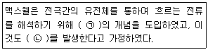
- ㉠ 와전류, ㉡ 자계
- ㉠ 변위전류, ㉡ 자계
- ㉠ 전자전류, ㉡ 전계
- ㉠ 파동전류, ㉡ 전계
(정답률: 76%)
19. 권선수가 N회인 코일에 전류 I(A)를 흘릴 경우, 코일에 ø(Wb)의 자속이 지나간다면 이 코일에 저장된 자계에너지(J)는?
- 1/2Nø2I
- 1/2NøI
- 1/2N2øI
- 1/2NøI2
(정답률: 61%)
20. 다음 중 인덕턴스의 공식이 옳은 것은? (단, N은 권수, I는 전류, ℓ은 철심의 길이, Rm은 자기저항, μ는 투자율, S는 철심 단면적이다.)
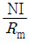
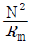
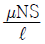
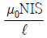
(정답률: 52%)
2과목: 전력공학
21. 직렬 콘덴서를 선로에 삽입할 때의 현상으로 옳은 것은?
- 부하의 역률을 개선한다.
- 선로의 리액턴스가 증가된다.
- 선로의 전압강하를 줄일 수 없다.
- 계통의 정태안정도를 증가시킨다.
(정답률: 52%)
22. 송전선로의 중성점을 접지하는 목적으로 가장 옳은 것은?
- 전압강하의 감소
- 유도장해의 감소
- 전선 동량의 절약
- 이상전압의 발생 방지
(정답률: 80%)
23. 그림과 같은 3상 송전계통의 송전전압은 22kV이다. 한 점 P에서 3상 단락했을 때 발전기에 흐르는 단락전류는 약 몇 A인가?
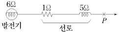
- 725
- 1150
- 1990
- 3725
(정답률: 57%)
24. 전력계통의 전력용 콘덴서와 직렬로 연결하는 리액터로 제거되는 고조파는?
- 제2고조파
- 제3고조파
- 제4고조파
- 제5고조파
(정답률: 74%)
25. 배전선로에서 사용하는 전압 조정방법이 아닌 것은?
- 승압기 사용
- 병렬콘덴서 사용
- 저전압계전기 사용
- 주상변압기 탭 전환
(정답률: 53%)
26. 다음 중 뇌해방지와 관계가 없는 것은?
- 댐퍼
- 소호환
- 가공지선
- 탑각접지
(정답률: 79%)
27. 다음 ( )에 알맞은 내용으로 옳은 것은? (단, 공급 전력과 선로 손실률은 동일하다.)
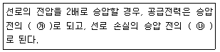
- ㉮ 1/4배, ㉯ 2배
- ㉮ 1/4배, ㉯ 4배
- ㉮ 2배, ㉯ 1/4배
- ㉮ 4배, ㉯ 1/4배
(정답률: 64%)
28. 일반회로정수가 A, B, C, D이고 송전단 상전압이 Es인 경우, 무부하 시의 충전전류(송전단 전류)는?
- C Es
- AC Es
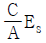
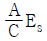
(정답률: 60%)
29. 주상변압기의 고장이 배전선로에 파급되는 것을 방지하고 변압기의 과부하 소손을 예방하기 위하여 사용되는 개폐기는?
- 리클로저
- 부하개폐기
- 컷아웃스위치
- 섹셔널라이저
(정답률: 59%)
30. 중성점 저항접지방식에서 1선 지락 시의 영상전류를 Io라고 할 때, 접지저항으로 흐르는 전류는?
- 1/3Io
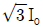
- 3Io
- 6Io
(정답률: 58%)
31. 변전소에서 수용가로 공급되는 전력을 차단하고 소내 기기를 점검할 경우, 차단기와 단로기의 개폐조작 방법으로 옳은 것은?
- 점검 시에는 차단기로 부하회로를 끊고 난 다음에 단로기를 열어야 하며, 점검 후에는 단로기를 넣은 후 차단기를 넣어야 한다.
- 점검 시에는 단로기를 열고 난 후 차단기를 열어야 하며, 점검 후에는 단로기를 넣고 난 다음에 차단기로 부하회로를 연결하여야 한다.
- 점검 시에는 차단기로 부하회로를 끊고 단로기를 열어야하며, 점검 후에는 차단기로 부하회로를 연결한 후 단로기를 넣어야 한다.
- 점검 시에는 단로기를 열고 난 후 차단기를 열어야 하며, 점검이 끝난 경우에는 차단기를 부하에 연결한 다음에 단로기를 넣어야 한다.
(정답률: 62%)
32. 설비용량 600kW, 부등률 1.2, 수용률 60%일 때의 합성 최대전력을 몇 kW 인가?
- 240
- 300
- 432
- 833
(정답률: 62%)
33. 다음 보호계전기 회로에서 박스 (A) 부분의 명칭은?
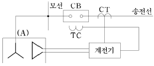
- 차단코일
- 영상변류기
- 계기용변류기
- 계기용변압기
(정답률: 56%)
34. 단거리 송전선로에서 정상상태 유효전력의 크기는?
- 선로리액턴스 및 전압위상차에 비례한다.
- 선로리액턴스 및 전압위상차에 반비례한다.
- 선로리액턴스에 반비례하고 상차각에 비례한다.
- 선로리액턴스에 비례하고 상차각에 반비례한다.
(정답률: 62%)
35. 전력 원선도의 실수축과 허수축은 각각 어느 것을 나타내는가?
- 실수축은 전압이고, 허수축은 전류이다.
- 실수축은 전압이고, 허수축은 역률이다.
- 실수축은 전류이고, 허수축은 유효전력이다.
- 실수축은 유효전력이고, 허수축은 무효전력이다.
(정답률: 78%)
36. 전선로의 지지물 양쪽의 경간의 차가 큰 장소에 사용되며, 일명 E형 철탑이라고도 하는 표준 철탑의 일종은?
- 직선형 철탑
- 내장형 철탑
- 각도형 철탑
- 인류형 철탑
(정답률: 78%)
37. 수차발전기가 난조를 일으키는 원인은?
- 수차의 조속기가 예민하다.
- 수차의 속도 변동률이 적다.
- 발전기의 관성 모멘트가 크다.
- 발전기의 자극에 제동권선이 있다.
(정답률: 65%)
38. 차단기가 전류를 차단할 때, 재점호가 일어나기 쉬운 차단 전류는?
- 동상전류
- 지상전류
- 진상전류
- 단락전류
(정답률: 66%)
39. 배전선에 부하가 균등하게 분포되었을 때 배전선 말단에서의 전압강하는 전 부하가 집중적으로 배전선 말단에 연결되어 있을 때의 몇 % 인가?
- 25
- 50
- 75
- 100
(정답률: 60%)
40. 송전선의 특성임피던스를 Z0, 전파속도를 V라 할 때, 이 송전선의 단위길이에 대한 인덕턴스 L은?
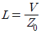
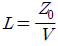
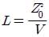
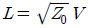
(정답률: 55%)
3과목: 전기기기
41. 정격 150kVA, 철손 1kW, 전부하 동손이 4kW인 단상 변압기의 최대 효율(%)과 최대효율 시의 부하(kVA)는? (단, 부하 역률은 1이다.)
- 96.8%, 125kVA
- 97%, 50kVA
- 97.2%, 100kVA
- 97.4%, 75kVA
(정답률: 56%)
42. 사이리스터에 의한 제어는 무엇을 제어하여 출력전압을 변환시키는가?
- 토크
- 위상각
- 회전수
- 주파수
(정답률: 68%)
43. 전동력 응용기기에서 GD2의 값이 적은 것이 바람직한 기기는?
- 압연기
- 송풍기
- 냉동기
- 엘리베이터
(정답률: 74%)
44. 온도 측정장치 중 변압기의 권선온도 측정에 가장 적당한 것은?
- 탐지코일
- dial온도계
- 권선온도계
- 봉상온도계
(정답률: 78%)
45. 어떤 변압기의 백분율 저항강하가 2%, 백분율 리액턴스 강하가 3%라 한다. 이 변압기로 역률이 80%인 부하에 전력을 공급하고 있다. 이 변압기의 전압변동률은 몇 % 인가?
- 2.4
- 3.4
- 3.8
- 4.0
(정답률: 54%)
46. 직류 및 교류 양용에 사용되는 만능 전동기는?
- 복권전동기
- 유도전동기
- 동기전동기
- 직권 정류자전동기
(정답률: 59%)
47. 어떤 IGBT의 열용량은 0.02J/℃, 열저항은 0.625℃/W이다. 이 소자에 직류 25A가 흐를 때 전압강하는 3V이다. 몇 ℃의 온도상승이 발생하는가?
- 1.5
- 1.7
- 47
- 52
(정답률: 49%)
48. 직류전동기의 속도제어법 중 정지 워드레오나드 방식에 관한 설명으로 틀린 것은?
- 광범위한 속도제어가 가능하다.
- 정토크 가변속도의 용도에 적합하다.
- 제철용 압연기, 엘리베이터 등에 사용된다.
- 직권전동기의 저항제어와 조합하여 사용한다.
(정답률: 60%)
49. 권수비 30인 단상변압기의 1차에 6600V를 공급하고, 2차에 40kW, 뒤진 역률 80%의 부하를 걸 때 2차 전류 I2 및 1차 전류 I1은 약 몇 A 인가? (단, 변압기의 손실은 무시한다.)
- I2=145.5, I1=4.85
- I2=181.8, I1=6.06
- I2=227.3, I1=7.58
- I2=321.3, I1=10.28
(정답률: 58%)
50. 동기전동기에서 90° 앞선 전류가 흐를 때 전기자 반작용은?
- 감자작용
- 증자작용
- 편자작용
- 교차자화작용
(정답률: 72%)
51. 일정 전압으로 운전하는 직류전동기의 손실이 x+yI2으로 될 때 어떤 전류에서 효율이 최대가 되는가? (단, z, y는 정수이다.)
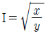
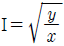
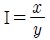
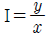
(정답률: 61%)
52. T-결선에 의하여 3300V의 3상으로부터 200V, 40kVA의 전력을 얻는 경우 T좌 변압기의 권수비는 약 얼마인가?
- 10.2
- 11.7
- 14.3
- 16.5
(정답률: 45%)
53. 유도전동기 슬립 s의 범위는?
- 1 ＜ s
- s ＜ -1
- -1 ＜ s ＜ 0
- 0 ＜ s ＜ 1
(정답률: 78%)
54. 전기자 총 도체수 500, 6극, 중권의 직류전동기가 있다. 전기자 전 전류가 100A일 때의 발생토크는 약 몇 kg ㆍ m인가? (단, 1극당 자속수는 0.01Wb이다.)
- 8.12
- 9.54
- 10.25
- 11.58
(정답률: 43%)
55. 3상 동기발전기 각 상의 유기기전력 중 제3고조파를 제거하려면 코일간격/극간격을 어떻게 하면 되는가?
- 0.11
- 0.33
- 0.67
- 0.34
(정답률: 48%)
56. 3상 유도전동기의 토크와 출력에 대한 설명으로 옳은 것은?
- 속도에 관계가 없다.
- 동일 속도에서 발생한다.
- 최대 출력은 최대 토크보다 고속도에서 발생한다.
- 최대 토크가 최대 출력보다 고속도에서 발생한다.
(정답률: 56%)
57. 단자전압 220V, 부하전류 48A, 계자전류 2A, 전기자저항 0.2Ω인 직류분권발전기의 유도기전력(V)은? (단, 전기자 반작용은 무시한다.)
- 210
- 220
- 230
- 240
(정답률: 64%)
58. 200kW, 200V의 직류 분권발전기가 있다. 전기자 권선의 저항이 0.025Ω일 때 전압변동률은 몇 % 인가?
- 6.0
- 12.5
- 20.5
- 25.0
(정답률: 60%)
59. 동기발전기에서 전기자 전류를 I, 역률을 cosθ라 하면 횡축 반작용을 하는 성분은?
- Icosθ
- Icotθ
- Isinθ
- Itanθ
(정답률: 54%)
60. 단상 유도전동기와 3상 유도전동기를 비교했을 때 단상 유도전동기의 특징에 해당되는 것은?
- 대용량이다.
- 중량이 작다.
- 역률, 효율이 좋다.
- 기동장치가 필요하다.
(정답률: 60%)
4과목: 회로이론
61. 비정현파의 성분을 가장 옳게 나타낸 것은?
- 직류분 +고조파
- 교류분 +고조파
- 교류분 +기본파 +고조파
- 직류분 +기본파 +고조파
(정답률: 73%)
62. 다음과 같은 전류의 초기값 I(0+)를 구하면?
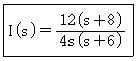
- 1
- 2
- 3
- 4
(정답률: 69%)
63. 대칭 n상 환상결선에서 선전류와 환상전류 사이의 위상차는 어떻게 되는가?
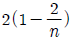
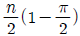
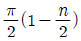
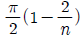
(정답률: 59%)
64. Va, Vb, Vc를 3상 불평형 전압이라 하면 정상(正相)전압(V)은? (단,
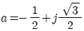
이다.)- 3(Va+Vb+Vc)
- 1/3(Va+Vb+Vc)
- 1/3(Va+a2Vb+aVc)
- 1/3(Va+aVb+a2Vc)
(정답률: 59%)
65. 그림에서 4단자 회로 정수 A, B, C, D 중 출력 단자 3, 4가 개방되었을 때의
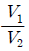
인 A의 값은?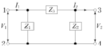
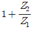
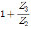
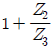
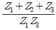
(정답률: 56%)
66. R=1kΩ, C=1μF가 직렬접속된 회로에 스텝(구형파) 전압 10V를 인가하는 순간에 커패시터 C에 걸리는 최대전압(V)은?
- 0
- 3.72
- 6.32
- 10
(정답률: 51%)
67. 저항 R=6Ω과 유도리액턴스 XL=8Ω이 직렬로 접속된 회로에서 인 전압을 인가하였다. 이 회로의 소비되는 전력(kW)은?
- 1.2
- 2.2
- 2.4
- 3.2
(정답률: 58%)
68. 어느 소자에 전압 e=125sin377t(V)를 가했을 때 전류 I=50cos377t(A)가 흘렀다. 이 회로의 소자는 어떤 종류인가?
- 순저항
- 용량 리액턴스
- 유도 리액턴스
- 저항과 유도 리액턴스
(정답률: 54%)
69. 기전력 3V, 내부저항 0.5Ω의 전지 9개가 있다. 이것을 3개씩 직렬로 하여 3조 병렬 접속한 것에 부하저항 1.5Ω을 접속하면 부하전류(A)는?
- 2.5
- 3.5
- 4.5
- 5.5
(정답률: 53%)
70. 의 전달함수를 미분방정식으로 표시하면? (단, 이다.)
(정답률: 54%)
71. 정격전압에서 1kW의 전력을 소비하는 저항에 정격의 80%의 전압을 가할 때의 전력(W)은?
- 340
- 540
- 640
- 740
(정답률: 64%)
72. 인 전압을 R-L 직렬회로에 가할 때에 제3고조파 전류의 실효값은 몇 A인가? (단, R=8Ω, ωL=2Ω이다.)
- 5
- 8
- 10
- 15
(정답률: 56%)
73. 대칭 3상 Y결선에서 선간전압이 200√3이고 각 상의 임피던스가 30+j40(Ω)의 평형부하일 때 선전류(A)는?
- 2
- 2√3
- 4
- 4√3
(정답률: 54%)
74. 3상 회로에 Δ결선된 평형 순저항 부하를 사용하는 경우 선간전압 220V, 상전류가 7.33A라면 1상의 부하저항은 약 몇 Ω인가?
- 80
- 60
- 45
- 30
(정답률: 58%)
75. 두 대의 전력계를 사용하여 3상 평형 부하의 역률을 측정하려고 한다. 전력계의 지시가 각각 P1(W), P2(W)할 때 이 회로의 역률은?
(정답률: 60%)
76. t=0에서 스위치 S를 닫았을 때 정상 전류값(A)은?
- 1
- 2.5
- 3.5
- 7
(정답률: 64%)
77. L형 4단자 회로망에서 4단자 정수가 이고, 영상임피던스 일 때 영상임피던스 Z02(Ω) 의 값은?
- 4
- 1/4
- 100/9
- 9/100
(정답률: 46%)
78. 다음과 같은 회로에서 a, b 양단의 전압은 몇 V 인가?
- 1
- 2
- 2.5
- 3.5
(정답률: 57%)
79. 저항 R1(Ω), R2(Ω) 및 인덕턴스 L(H)이 직렬로 연결되어 있는 회로의 시정수(s)는?
(정답률: 62%)
80. 함수를 시간추이정리에 의해서 역변환하면?
- sinπ(t+a)ㆍu(t+a)
- sinπ(t-2)ㆍu(t-2)
- cosπ(t+a)ㆍu(t+a)
- cosπ(t-2)ㆍu(t-2)
(정답률: 50%)
5과목: 전기설비기술기준 및 판단 기준
81. 건조한 장소로서 전개된 장소에 한하여 시설할 수 있는 고압 옥내배선의 방법은?
- 금속관 공사
- 애자사용 공사
- 가요전선관 공사
- 합성수지관 공사
(정답률: 64%)
82. 154/22.9kV용 변전소의 변압기에 반드시 시설하지 않아도 되는 계측장치는?
- 전압계
- 전류계
- 역률계
- 온도계
(정답률: 62%)
83. 22.9kV 특고압 가공전선로의 중성선은 다중 접지를 하여야 한다. 각 접지선을 중성선으로부터 분리하였을 경우 1 km마다 중성선과 대지 사이의 합성전기저항 값은 몇 Ω 이하인가? (단, 전로에 지락이 생겼을 때의 2초 이내에 자동적으로 이를 전로로부터 차단하는 장치가 되어 있다.)
- 5
- 10
- 15
- 20
(정답률: 34%)
84. 전기부식방식 시설은 지표 또는 수중에서 1m 간격의 임의의 2점(양극의 주위 1m 이내의 거리에 있는 점 및 울타리의 내부점을 제외한다.)간의 전위차가 몇 V를 넘으면 안되는가?
- 5
- 10
- 25
- 30
(정답률: 41%)
85. 고압 가공전선이 가공약전류전선 등과 접근하는 경우에 고압 가공전선과 가공약전류전선 사이의 이격거리는 몇 cm 이상이어야 하는가? (단, 전선이 케이블인 경우)
- 20
- 30
- 40
- 50
(정답률: 39%)
86. 가공전선로의 지지물에 지선을 시설하는 기준으로 옳은 것은?
- 소선 지름 : 1.6mm, 안전율 : 2.0, 허용인장하중 : 4.31kN
- 소선 지름 : 2.0mm, 안전율 : 2.5, 허용인장하중 : 2.11 kN
- 소선 지름 : 2.6mm, 안전율 : 1.5, 허용인장하중 : 3.21kN
- 소선 지름 : 2.6mm, 안전율 : 2.5, 허용인장하중 : 4.31kN
(정답률: 73%)
87. 시가지 등에서 특고압 가공전선로를 시설하는 경우 특고압 가공전선로용 지지물로 사용할 수 없는 것은? (단, 사용전압이 170kV 이하인 경우이다.)
- 철탑
- 목주
- 철주
- 철근 콘크리트주
(정답률: 67%)
88. 중성선 다중접지식의 것으로 전로에 지락이 생겼을 때에 2초 이내에 자동적으로 이를 전로로부터 차단하는 장치가 되어 있는 22.9kV 가공전선로를 상부 조영재의 위쪽에서 접근상태로 시설하는 경우, 가공전선과 건조물과의 이격거리는 몇 m 이상이어야 하는가? (단, 전선으로는 나전선을 사용한다고 한다.)
- 1.2
- 1.5
- 2.5
- 3.0
(정답률: 30%)
89. 시가지에 시설하는 고압 가공전선으로 경동선을 사용하려면 그 지름은 최소 몇 mm이어야 하는가?
- 2.6
- 3.2
- 4.0
- 5.0
(정답률: 30%)
90. 케이블을 지지하기 위하여 사용하는 금속제 케이블 트레이의 종류가 아닌 것은?
- 사다리형
- 통풍 밀폐형
- 통풍 채널형
- 바닥 밀폐형
(정답률: 60%)
91. 출퇴표시등 회로에 전기를 공급하기 위한 변압기는 2차측 전로의 사용전압이 몇 V 이하인 절연 변압기이어야 하는가?
- 40
- 60
- 150
- 300
(정답률: 42%)
92. 발전소 ㆍ 변전소 또는 이에 준하는 곳의 특고압 전로에는 그의 보기 쉬운 곳에 어떤 표시를 반드시 하여야 하는가?
- 모선(母線) 표시
- 상별(相別) 표시
- 차단(遮斷) 위험표시
- 수전(受電) 위험표시
(정답률: 59%)
93. 전력 보안 통신용 전화설비를 시설하여야 하는 곳은?
- 2 이상의 발전소 상호 간
- 원격 감시 제어가 되는 변전소
- 원격 감시 제어가 되는 급전소
- 원격 감시 제어가 되지 않는 발전소
(정답률: 66%)
94. 6.6kV 지중전선로의 케이블을 직류전원으로 절연 내력 시험을 하자면 시험전압은 직류 몇 V 인가?
- 9900
- 14420
- 16500
- 19800
(정답률: 45%)
95. 전기부식방지 시설을 시설할 때 전기부식방지용 전원 장치로부터 양극 및 피방식체까지의 전로의 사용전압은 직류 몇 V 이하이어야 하는가?
- 20
- 40
- 60
- 80
(정답률: 64%)
96. 변압기의 안정권선이나 유휴권선 또는 전압조정기의 내장권선을 이상전압으로부터 보호하기 위하여 특히 필요할 경우에 그 권선에 접지공사를 할 때에는 몇 종 접지공사를 하여야 하는가?(관련 규정 개정전 문제로 여기서는 기존 정답인 1번을 누르면 정답 처리됩니다. 자세한 내용은 해설을 참고하세요.)
- 제1종 접지공사
- 제2종 접지공사
- 제3종 접지공사
- 특별 제3종 접지공사
(정답률: 57%)
97. 가공 직류 전차선의 레일면상의 높이는 몇 m 이상이어야 하는가?
- 6.0
- 5.5
- 5.0
- 4.8
(정답률: 39%)
98. 제1종 접지공사의 접지저항 값은 몇 Ω 이하로 유지하여야 하는가?(관련 규정 개정전 문제로 여기서는 기존 정답인 1번을 누르면 정답 처리됩니다. 자세한 내용은 해설을 참고하세요.)
- 10
- 30
- 50
- 100
(정답률: 62%)
99. 고압 가공전선 상호 간의 접근 또는 교차하여 시설되는 경우, 고압 가공전선 상호 간의 이격거리는 몇 cm 이상이어야 하는가? (단, 고압 가공전선은 모두 케이블이 아니라고 한다.)
- 50
- 60
- 70
- 80
(정답률: 42%)
100. 과전류차단기로 시설하는 퓨즈 중 고압전로에 사용하는 비포장 퓨즈는 정격전류의 몇 배의 전류에 견디어야 하는가?
- 1.1
- 1.25
- 1.5
- 2
(정답률: 56%)